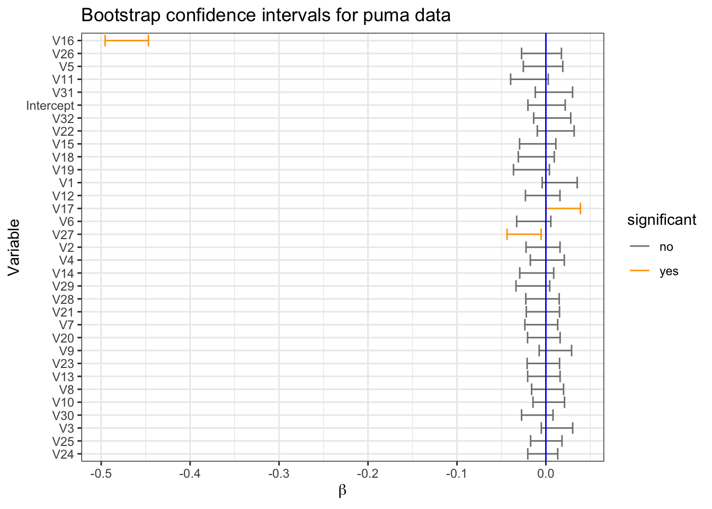

Part a: Develop a function that has the following formal arguments:
a multiple linear regression model object from lm()
a number of bootstrap iterations (200 by default)
a confidence level (95% by default)
Your function must return a set of bootstrap confidence intervals for the beta coefficients in that model.
Note: Your function may not call another function to conduct the bootstrapping or interval construction.
Part b: Use your function on each of the 9 regression datasets used in class in Section 5.4.1.
9.1.2 Problem 2
For this problem you will use the French Fries experiment data from the reshape2 package.
The following mixed-effects model will test for interactions between the oil types (treatment) and number of weeks the oil had been used (time = 1 to 10), while modeling the random variability of replicates between the participants. See the R code below for the model structure and output.
# load French Fries taste test dataff<-reshape2::french_fries# only first and last weekff_before_after<-ff[ff$time%in%c(1,10), ]str(ff_before_after)
In the main effects you will find that coefficients represent the 2-by-3 structure where we have {start, end} by {oil1, oil2, oil3} represented.
Part a: Conduct a permutation test for pairwise differences between the estimated starting scores (time = 1) for the potato flavors for two oil types. Monte-Carlo methods allowed.
Note: You need to be careful to permute the treatment labels WITHIN each experimental block for subject and time for this test.
Part b: Create permutation-based 95% confidence intervals for the change in flavor before and after for each of the three oils. In other words, create permutation-based confidence intervals for beta2-beta1, beta4-beta3 and beta6-beta5 from the model above. Monte-Carlo methods allowed.
9.2 Solution
9.3 Problem 1
First we need to create a function to load all of the pre-cleaned datasets programmatically (see Section 5.4.1 for a description of the data pre-processing).
# function to read in all of the different datasets# -> datasets should be in the path and suffixed with "_clean.Rdata"load_datasets<-function(nms){# initialize dataset holder and set namesdata_list<-list(NULL)# for loop to load each datasetfor(iinseq_along(nms)){# create string of path and filename and then load itload(paste0("files/data/", nms[i], "_cleaned.Rdata"))# add dataset to a list of datasetsdata_list[[i]]<-data}# add labels for the datsetsnames(data_list)<-nmsreturn(data_list)}# test functiondata_test<-load_datasets(nms =c("air_quality", "casp"))str(data_test)
List of 2
$ air_quality:'data.frame': 9357 obs. of 13 variables:
..$ y : num [1:9357] 0.474 0.466 0.469 0.469 0.461 ...
..$ PT08S1_CO_ : num [1:9357] 0.943 0.737 1.07 0.991 0.676 ...
..$ NMHC_GT_ : num [1:9357] 2.21 1.94 1.77 1.71 1.5 ...
..$ C6H6_GT_ : num [1:9357] 0.242 0.182 0.172 0.177 0.112 ...
..$ PT08S2_NMHC_: num [1:9357] 0.442 0.176 0.13 0.156 -0.171 ...
..$ NOx_GT_ : num [1:9357] -0.0102 -0.2549 -0.1461 0.0131 -0.1461 ...
..$ PT08S3_NOx_ : num [1:9357] 0.811 1.177 1.071 0.922 1.273 ...
..$ NO2_GT_ : num [1:9357] 0.432 0.267 0.44 0.503 0.456 ...
..$ PT08S4_NO2_ : num [1:9357] 0.643 0.359 0.35 0.412 0.211 ...
..$ PT08S5_O3_ : num [1:9357] 0.64107 -0.00672 0.2165 0.49882 0.29529 ...
..$ T : num [1:9357] 0.0885 0.0815 0.0491 0.0283 0.0329 ...
..$ RH : num [1:9357] 0.184 0.16 0.283 0.401 0.393 ...
..$ AH : num [1:9357] 0.195 0.194 0.195 0.196 0.196 ...
$ casp :'data.frame': 45730 obs. of 10 variables:
..$ y : num [1:45730] 1.5585 -0.2824 0.2495 1.3243 0.0349 ...
..$ F1: num [1:45730] 0.908 -0.907 -0.529 -0.357 -0.594 ...
..$ F2: num [1:45730] 0.88 -0.952 -0.882 -0.443 -0.874 ...
..$ F3: num [1:45730] 0.241 -0.64 -1.256 -0.338 -1.107 ...
..$ F4: num [1:45730] 1.059 -0.904 -0.653 -0.643 -0.922 ...
..$ F5: num [1:45730] 0.894 -1.001 -0.519 -0.28 -0.616 ...
..$ F6: num [1:45730] 0.996 -0.835 -0.912 -0.517 -0.73 ...
..$ F7: num [1:45730] 0.15 -0.331 -0.506 -0.372 -0.59 ...
..$ F8: num [1:45730] 0.566879 -0.548295 -0.725307 0.000441 -0.512893 ...
..$ F9: num [1:45730] -1.253 0.673 0.717 0.759 0.902 ...
Now we can create a function to 1) create bootstrap samples, 2) fit a linear model on each bootstrap sample, 3) save all coefficients and 4) calculate the corresponding \(100(\alpha)\%\) bootstrap confidence intervals.
# load packageslibrary(tidyverse)# function to get bootstrap confidence intervals for all the coefficients of a linear modelcreate_bootstrap_ci<-function(mod, n_boot_samples=200, conf_level=0.95){# initialize dataframe to store bootstrap statistics for each iteration# (renaming the intercept to get rid of special characters in the extracted name)nms=c("iteration", "Intercept", names(coefficients(mod)[-1]))dist_bootstrap=matrix(data =NA, nrow =0, ncol =length(nms), dimnames =list(c(), nms))%>%data.frame# loop create bootstrap distributionsfor(iin1:n_boot_samples){# create individual bootstrap by sampling with replacement from the original samplesample_bootstrap=mod$model%>%sample_n(size =nrow(.), replace =TRUE)# fit model based on the bootstrap samplemod_tmp=lm(formula =y~., data =sample_bootstrap)# record iteration and resulting betas (i.e. the bootstrap statistic)dist_bootstrap[i, ]=c(i, coefficients(mod_tmp))}# calculate significance level corresponding to the confidence levelalpha<-1-conf_level# calculate the 100(1-alpha)% central bootstrap interval# then format resultci_bootstrap<-dist_bootstrap%>%select(-iteration)%>%sapply(quantile, probs =c(alpha/2, 1-(alpha/2)))%>%t()%>%data.frame()%>%rownames_to_column(var ="variable")%>%rename(bound_lower =2, bound_upper =3)# return intervals and distributions to plotlist("ci_bootstrap"=ci_bootstrap, "dist_bootstrap"=dist_bootstrap)%>%return}# test functionci_bootstrap<-lm(y~., data_test[[1]])%>%create_bootstrap_ci()ci_bootstrap$ci_bootstrap
Error in `histogram()`:
! could not find function "histogram"
Now we can run all datasets through the above function to get the desired bootstrap confidence intervals.
# load all data after initializing a vector of the dataset namesnms_datasets<-c("wpbc", "wankara", "laser", "treasury", "skillcraft", "puma", "air_quality", "ccpp", "casp")data_all<-load_datasets(nms_datasets)str(data_all, max.level =1)
List of 9
$ wpbc :'data.frame': 198 obs. of 32 variables:
$ wankara :'data.frame': 321 obs. of 10 variables:
$ laser :'data.frame': 993 obs. of 5 variables:
$ treasury :'data.frame': 1049 obs. of 16 variables:
$ skillcraft :'data.frame': 3395 obs. of 9 variables:
$ puma :'data.frame': 8192 obs. of 33 variables:
$ air_quality:'data.frame': 9357 obs. of 13 variables:
$ ccpp :'data.frame': 9568 obs. of 5 variables:
$ casp :'data.frame': 45730 obs. of 10 variables:
# fit linear models for all datasetsmodels_all<-data_all%>%map(\(df)lm(y~., data =df))str(models_all, max.level =1)
List of 9
$ wpbc :List of 12
..- attr(*, "class")= chr "lm"
$ wankara :List of 12
..- attr(*, "class")= chr "lm"
$ laser :List of 12
..- attr(*, "class")= chr "lm"
$ treasury :List of 12
..- attr(*, "class")= chr "lm"
$ skillcraft :List of 12
..- attr(*, "class")= chr "lm"
$ puma :List of 12
..- attr(*, "class")= chr "lm"
$ air_quality:List of 12
..- attr(*, "class")= chr "lm"
$ ccpp :List of 12
..- attr(*, "class")= chr "lm"
$ casp :List of 12
..- attr(*, "class")= chr "lm"
List of 9
$ wpbc :List of 2
..$ ci_bootstrap :'data.frame': 32 obs. of 3 variables:
..$ dist_bootstrap:'data.frame': 200 obs. of 33 variables:
$ wankara :List of 2
..$ ci_bootstrap :'data.frame': 10 obs. of 3 variables:
..$ dist_bootstrap:'data.frame': 200 obs. of 11 variables:
$ laser :List of 2
..$ ci_bootstrap :'data.frame': 5 obs. of 3 variables:
..$ dist_bootstrap:'data.frame': 200 obs. of 6 variables:
$ treasury :List of 2
..$ ci_bootstrap :'data.frame': 16 obs. of 3 variables:
..$ dist_bootstrap:'data.frame': 200 obs. of 17 variables:
$ skillcraft :List of 2
..$ ci_bootstrap :'data.frame': 9 obs. of 3 variables:
..$ dist_bootstrap:'data.frame': 200 obs. of 10 variables:
$ puma :List of 2
..$ ci_bootstrap :'data.frame': 33 obs. of 3 variables:
..$ dist_bootstrap:'data.frame': 200 obs. of 34 variables:
$ air_quality:List of 2
..$ ci_bootstrap :'data.frame': 13 obs. of 3 variables:
..$ dist_bootstrap:'data.frame': 200 obs. of 14 variables:
$ ccpp :List of 2
..$ ci_bootstrap :'data.frame': 5 obs. of 3 variables:
..$ dist_bootstrap:'data.frame': 200 obs. of 6 variables:
$ casp :List of 2
..$ ci_bootstrap :'data.frame': 10 obs. of 3 variables:
..$ dist_bootstrap:'data.frame': 200 obs. of 11 variables:
And create a function to visualize the results.
# create function to plot bootstrap confidence intervals of the betasplot_bootstrap_cis<-function(ci_bootstrap, dataset_name){# plot confidence bands with reference line# -> sorted by increasing width# -> calculate if interval is completely above or below zero confidence bandsg=ci_bootstrap%>%mutate(width =bound_upper-bound_lower, significant =case_when(bound_lower*bound_upper>0~"yes", .default ="no"))%>%arrange(width)%>%mutate(variable =fct_inorder(f =variable, ordered =TRUE))%>%ggplot()+geom_errorbar(aes(xmin =bound_lower, xmax =bound_upper, y =variable, color =significant))+geom_vline(aes(xintercept =0), color ="blue")+scale_color_manual(values =c("yes"="orange", "no"="grey50"))+labs(title =paste0("Bootstrap confidence intervals for ", dataset_name," data"), x =expression(beta), y ="Variable")+theme_bw()return(g)}# test functionplot_bootstrap_cis(cis_all[[1]]$ci_bootstrap, nms_datasets[1])
Finally we can visualize all of the results.
# plot bootstrap confidence intervals for all datasetsmap2(cis_all, nms_datasets, \(results, nm)plot_bootstrap_cis(results[[1]], nm))
$wpbc
$wankara
$laser
$treasury
$skillcraft
$puma

$air_quality
$ccpp
$casp
9.4 Problem 2
Source Code
# Homework 2 {#sec-hw2}```{r}#| label: load-prereqs#| echo: false#| message: false# knitr optionssource("_common.R")```## Assignment### Problem 1Part a: Develop a function that has the following formal arguments: 1. a multiple linear regression model object from `lm()`2. a number of bootstrap iterations (200 by default)3. a confidence level (95% by default)Your function must return a set of bootstrap confidence intervals for the beta coefficients in that model.*Note*: Your function may not call another function to conduct the bootstrapping or interval construction.Part b: Use your function on each of the 9 regression datasets used in class in @sec-computational-datasets.### Problem 2For this problem you will use the French Fries experiment data from the `reshape2` package.The following mixed-effects model will test for interactions between the oil types (treatment) and number of weeks the oil had been used (time = 1 to 10), while modeling the random variability of replicates between the participants. See the R code below for the model structure and output. ```{r}#| label: starter-code# load French Fries taste test dataff <- reshape2::french_fries# only first and last weekff_before_after <- ff[ff$time %in%c(1,10), ]str(ff_before_after)# run mixed modelmixed_mod <- lme4::lmer(potato ~ (-1) + time:treatment + (1|subject), data = ff_before_after)mixed_modmixed_mod@beta```In the main effects you will find that coefficients represent the 2-by-3 structure where we have {start, end} by {oil1, oil2, oil3} represented.Part a: Conduct a permutation test for pairwise differences between the estimated starting scores (time = 1) for the potato flavors for two oil types. Monte-Carlo methods allowed.*Note*: You need to be careful to permute the treatment labels WITHIN each experimental block for subject and time for this test. Part b: Create permutation-based 95% confidence intervals for the change in flavor before and after for each of the three oils. In other words, create permutation-based confidence intervals for beta2-beta1, beta4-beta3 and beta6-beta5 from the model above. Monte-Carlo methods allowed.## Solution## Problem 1First we need to create a function to load all of the pre-cleaned datasets programmatically (see @sec-computational-datasets for a description of the data pre-processing).```{r}#| label: function-load-data# function to read in all of the different datasets# -> datasets should be in the path and suffixed with "_clean.Rdata"load_datasets <-function(nms) {# initialize dataset holder and set names data_list <-list(NULL)# for loop to load each datasetfor (i inseq_along(nms)) {# create string of path and filename and then load itload(paste0("files/data/", nms[i], "_cleaned.Rdata"))# add dataset to a list of datasets data_list[[i]] <- data }# add labels for the datsetsnames(data_list) <- nmsreturn(data_list)}# test functiondata_test <-load_datasets(nms =c("air_quality", "casp"))str(data_test)```Now we can create a function to 1) create bootstrap samples, 2) fit a linear model on each bootstrap sample, 3) save all coefficients and 4) calculate the corresponding $100(\alpha)\%$ bootstrap confidence intervals.```{r}#| label: function-bootstrap-cis# load packageslibrary(tidyverse)# function to get bootstrap confidence intervals for all the coefficients of a linear modelcreate_bootstrap_ci <-function(mod, n_boot_samples =200, conf_level =0.95) {# initialize dataframe to store bootstrap statistics for each iteration# (renaming the intercept to get rid of special characters in the extracted name) nms =c("iteration", "Intercept", names(coefficients(mod)[-1])) dist_bootstrap =matrix(data =NA, nrow =0, ncol =length(nms), dimnames =list(c(), nms)) %>% data.frame# loop create bootstrap distributionsfor (i in1:n_boot_samples) {# create individual bootstrap by sampling with replacement from the original sample sample_bootstrap = mod$model %>%sample_n(size =nrow(.), replace =TRUE)# fit model based on the bootstrap sample mod_tmp =lm(formula = y ~ ., data = sample_bootstrap)# record iteration and resulting betas (i.e. the bootstrap statistic) dist_bootstrap[i, ] =c(i, coefficients(mod_tmp)) }# calculate significance level corresponding to the confidence level alpha <-1- conf_level# calculate the 100(1-alpha)% central bootstrap interval# then format result ci_bootstrap <- dist_bootstrap %>%select(-iteration) %>%sapply(quantile, probs =c(alpha /2, 1- (alpha /2))) %>%t() %>%data.frame() %>%rownames_to_column(var ="variable") %>%rename(bound_lower =2, bound_upper =3)# return intervals and distributions to plotlist("ci_bootstrap"= ci_bootstrap, "dist_bootstrap"= dist_bootstrap) %>% return}# test functionci_bootstrap <-lm(y ~ ., data_test[[1]]) %>%create_bootstrap_ci()ci_bootstrap$ci_bootstraphistogram(ci_bootstrap$dist_bootstrap$PT08S1_CO_)```Now we can run all datasets through the above function to get the desired bootstrap confidence intervals.```{r}#| label: calculate_bootstrap_cis# load all data after initializing a vector of the dataset namesnms_datasets <-c("wpbc", "wankara", "laser", "treasury", "skillcraft", "puma", "air_quality", "ccpp", "casp")data_all <-load_datasets(nms_datasets)str(data_all, max.level =1)# fit linear models for all datasetsmodels_all <- data_all %>%map(\(df) lm(y ~ ., data = df))str(models_all, max.level =1)# create all bootstrap confidence intervalscis_all <- models_all %>%map(\(mod) create_bootstrap_ci(mod = mod, n_boot_samples =200, conf_level =0.95),.progress =TRUE)str(cis_all, max.level =2)```And create a function to visualize the results.```{r}#| label: function-display-results# create function to plot bootstrap confidence intervals of the betasplot_bootstrap_cis <-function(ci_bootstrap, dataset_name) {# plot confidence bands with reference line# -> sorted by increasing width# -> calculate if interval is completely above or below zero confidence bands g = ci_bootstrap %>%mutate(width = bound_upper - bound_lower,significant =case_when(bound_lower * bound_upper >0~"yes",.default ="no")) %>%arrange(width) %>%mutate(variable =fct_inorder(f = variable, ordered =TRUE)) %>%ggplot() +geom_errorbar(aes(xmin = bound_lower,xmax = bound_upper,y = variable,color = significant)) +geom_vline(aes(xintercept =0),color ="blue") +scale_color_manual(values =c("yes"="orange", "no"="grey50")) +labs(title =paste0("Bootstrap confidence intervals for ", dataset_name," data"),x =expression(beta),y ="Variable") +theme_bw()return(g)}# test functionplot_bootstrap_cis(cis_all[[1]]$ci_bootstrap, nms_datasets[1])```Finally we can visualize all of the results.```{r}#| label: display-all-results# plot bootstrap confidence intervals for all datasetsmap2(cis_all, nms_datasets, \(results, nm) plot_bootstrap_cis(results[[1]], nm))```## Problem 2```{r}#| label: mixed-effets-confusion#| include: false#| eval: false# Problem 2 -> Setup and description ------------------# ????? maybe add in a description about what the dataset is# -> this would help explain what the 'replicates' are that are mentioned below# load french fries taste test data data_ff <- reshape2::french_fries# filter dataset to have only the first and last weeks of data data_ff_before_after <- data_ff %>%filter(time %in%c(1,10))# DONT NEED TO RUN THE LINES UNDER THESE COMMENTS FOR THE REST OF THIS SECTION# the following mixed-effects model will test for interactions between... # ... the oil types (treatment) and number of weeks the oil had been used (time = 1 to 10)...# ... while modeling the random variability of replicates between the participants # ????? should add something about the syntax for this model statement# ---> the (1 | subject) specifies that subject is a random effect, but not sure what the grouping of 1 represents????#model_mixed <- lme4::lmer(potato ~ (-1) + time:treatment + (1 | subject), data = data_ff_before_after)# check out the output of the model# ???? what do all of the things in the model result mean???????# ????? what does '@' do????#model_mixed#model_mixed@beta# in the main effects you will find that coefficients represent the 2-by-3 structure...# ... where we have {start, end} by {oil1, oil2, oil3} represented# in other words, we have 6 betas; one for each unique combination of time = 1, 2 and treatment = 1, 2, 3# Problem 2 -> Functions ------------------# HOW TO IMPROVE THIS FUNCTION BY MAKING IT ABLE TO WORK WITH ANY FLAVOR SCORE? OR ALL OF THEM?# -> SO HOW TO CHANGE FORMULA IF GIVEN A STRING OF WHAT THE RESPONSE SHOULD BE???#!!!! IS THERE SOME BETTER TERMINOLOGY TO DESCRIBE SOME INTERMEDIATE RESULTS WHILE RUNNING A PERMUTATION TEST???# function to run a permutation test for the pairwise differences in estimated starting scores for one of the flavor scores permutation_test_pairwise <-function(df_original, n_permutation_samples =200) {# initialize dataframe to store coefficients for each iteration nms <-c("iteration", paste0("treatment_", 1:length(unique(df_original$treatment)))) permutated_coefs <-matrix(data =NA, nrow =0, ncol =length(nms), dimnames =list(c(), nms)) %>% data.frame# loop run permutationsfor (i in1:n_permutation_samples) {# randomly permute treatment labels within each subject for time 1 only# -> filter to time 1# -> split into separate dataframes for each subject# -> reassign treatment labels# -> combine smaller dataframes back into one large one data_permute_pairwise <- df_original %>%filter(time ==1) %>%split(list(.$subject), drop =TRUE) %>%lapply(function(df) mutate(df, treatment =sample(treatment))) %>%Reduce(f = bind_rows)# ???? isn't this just a regular fixed effects model????# fit main effects mixed model based on permutated treatments model_mixed <- lme4::lmer(potato ~ (-1) + treatment + (1| subject), data = data_permute_pairwise)# record iteration and resulting betas (i.e. the summary statistic of interest) permutated_coefs[i, ] <-c(i, model_mixed@beta) }# calculate pairwise differences between all pairs of treatments for each iterations# then round and return the result permutated_coefs %>%transmute(t1_minus_t2 = treatment_1 - treatment_2,t1_minus_t3 = treatment_1 - treatment_3,t2_minus_t3 = treatment_2 - treatment_3) %>%round(4) %>% return }# function to run a permutation test for the change in flavor score for time 10 and time 1 permutation_test_change <-function(df_original, n_permutation_samples =200) {# initialize dataframe to store coefficients for each iteration# ??? maybe come up with better colnames??# !!!1 NEED TO FIGURE OUT HOW TO UN-HARDCODE THE NUMBER OF COLUMNS nms <-c("iteration", paste0("beta_", 1:6)) permutated_coefs <-matrix(data =NA, nrow =0, ncol =length(nms), dimnames =list(c(), nms)) %>% data.frame# loop run permutationsfor (i in1:n_permutation_samples) {# randomly permute treatment labels within each subject and time combination# -> split into separate dataframes for each timea and subject combination# -> reassign treatment labels# -> combine smaller dataframes back into one large one data_permute_change <- df_original %>%split(list(.$time, .$subject), drop =TRUE) %>%lapply(function(df) mutate(df, treatment =sample(treatment))) %>%Reduce(f = bind_rows)# fit interaction mixed model based on permutated treatments# !!! probably a better way to get rid of subjects without all of the data model_mixed <- lme4::lmer(potato ~ (-1) + time:treatment + (1| subject), data = data_permute_change %>%filter(!subject %in%c(3, 79)))# record iteration and resulting betas (i.e. the summary statistic of interest) permutated_coefs[i, ] <-c(i, model_mixed@beta) }# calculate differences between ending score and starting score for each treatment# then round and return the result permutated_coefs %>%transmute(b2_minus_b1 = beta_2 - beta_1,b4_minus_b3 = beta_4 - beta_3,b6_minus_b5 = beta_6 - beta_5) %>%round(4) %>% return }# Problem 2 -> Perform desired tasks ------------------# fit main effects model using original data (only using time 1)# -> extract the codfficients real_coefs <- data_ff_before_after %>%filter(time ==1) %>% lme4::lmer(potato ~ (-1) + treatment + (1| subject), data = .) %>% .@beta# calculate the differences in real coefficients real_diffs <-c(real_coefs[1] - real_coefs[2], real_coefs[1] - real_coefs[3], real_coefs[2] - real_coefs[3])# run permutation test on the treatments and calculate the resulting coefficients# -> calculate probability the differences in simulated coefficients are more extreme...# ,,, than that from the original data and modelpermutation_test_pairwise(df_original = data_ff_before_after, n_permutation_samples =200) %>%mapply(function(col, diffs)mean(abs(col) >abs(diffs)), ., real_diffs)# ???? DESIGN QUESTION -> WHY ARE THE COEFFICIENTS THE SAME FOR THE MAIN EFFECTS AND THE INTERACTION MODELS????# run permutation test on the treatments and calculate the resulting coefficients (and set significance level)# -> create confidence (or credible??) intervals for the difference is scores for time 10 and time 1 alpha <-0.05permutation_test_change(df_original = data_ff_before_after, n_permutation_samples =200) %>%sapply(quantile, probs =c(alpha /2, 1- alpha /2))# Displayed first above are the estimated probabilities that the observed pairwise differences in coefficents for each treatment are more extreme than those calculated when randomly permuting the treatment labels.# Displayed above are the 95% confidence intervals for the estimated change in potato score from week 1 to week 10 for each type of oil (calculated as time 10 - time 1); thus a negative interval implies that the score decreased.``````{r}#| label: mixed-effets-confusion2#| include: false#| eval: false# More comments and extra code ---------------------# see which subjects don't have data for both time 1 and time 10# then compare to levels to see which subject numberssapply(1:12, function(i) nrow(filter(data_ff_before_after, subject ==levels(subject)[i])))# THERE ARE SOME SUBJECTS THAT DONT HAVE WEEK 1 AND WEEK 10 DATA# WE CAN KEEP THEM IN THE MODEL TO IMPROVE OUR MODELS ESTIMATE OF WEEK Q; DOING THIS WONT HURT OUR WEEK 10 ESTIMATION# OR WE CAN DROP THEM TOTALLY# we are only permuting within a sub group (so within the six baskets of fries for each subject)# keep two observations for each treatment so that our comparison the the original stuff (????) is apples to apples# IRRELEVANT CODE THAT LOOKED TO NICE TO DELETE :)# ------> this is directly comparing the means, instead of fitting a model on the permutated dataset and looking at the coefficients# now calculate the mean differences in potato scores between the three oil types# -> (just looking at one of the flavor scores)# -> we are averging over subject data_permute %>%group_by(time, treatment) %>%summarize(avg_potato =mean(potato)) %>%pivot_wider(names_from = time, names_prefix ="time_", values_from = avg_potato) %>%transmute(difference = time_1 - time_10)```